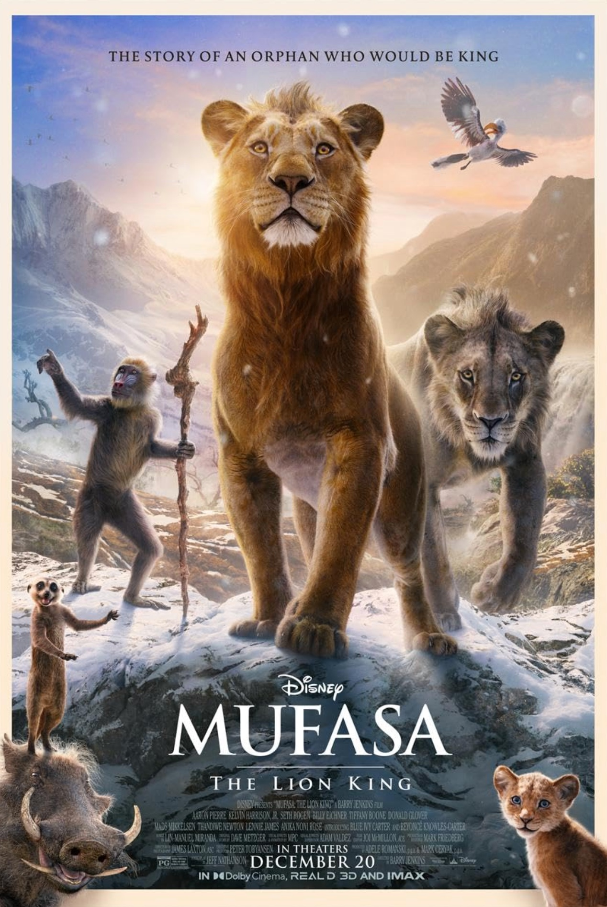

Mufasa

Summary: Lost and alone, orphaned cub Mufasa meets a sympathetic lion named Taka, the heir to a royal bloodline. The chance meeting sets in motion an expansive journey of an extraordinary group of misfits searching for their destinies.
Genres: Animation, Drama, Musical
Cast: Aaron Pierre, Kelvin Harrison Jr., Tiffany Boone
Director: Barry Jenkins
Score: 6.8